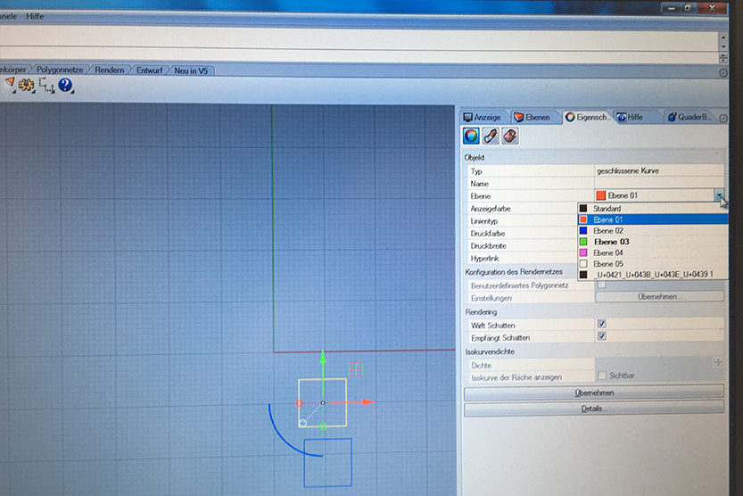
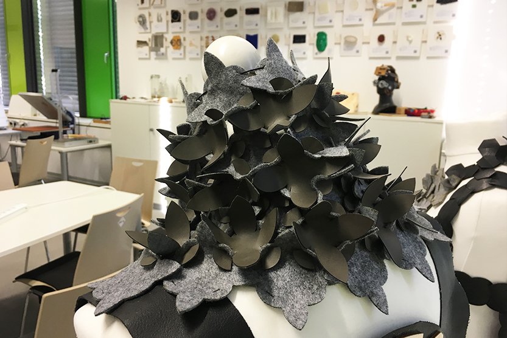

1
Making pattern begins with thinking about grid. I chose as a main shape circle and tried to play with it. Finally I made this pattern.
After that I printed my pattern and tried to figure out how I can make modules out of the pattern. Cutting from the paper is very helpful tool.
When your finalise your idea, prepare final desing of modules. I used interlock modules (male and female).
2
Next step is cutting your pieces in the laser cutter. First of all you should choose fabric you want to use and made test cutting to find setting for your fabric. In the Fablab I was using the small laser cutter. If you prepare your modules in Illustrator, you have to export file in .dxf format. To use laser cutter you need to open your file in Rhino on the laptop connected to the printer. At first I wanted to try different settings so I made small square to try out. Because Rhino works in a different way than Illustrator, you have to go to Ebenen (layers), select layer and give it a color. Remember that colors shoul be only RGB and with value 0 or 255.
After that you have to assign a layer to selected object. To do that select Objektebene andern.
In this window you can check if your object has correct layer.

3
Now you have to print, for that go to Datei/Druken. In a new window first of all you have to define your printing space. For that go to Definieren and drag and drop as on photos. When you are finished press Enter.
4
Now you have to select Eigenschaften to define laser settings. In a new window select color mapping and for every color choose Speed, Power an Frequency. It means that object with different colors will be cutted with different settings. It is the best way to find your perfect settings for material. Because I used fabric which is easy to cut, I selected speed 100% and tried 4 different values for speed starting from the very small.
On laser cutter your have to set focus and jog. First set the focus. Press button marked 1 on the photo, then using arrows set the focus.
Jog you have to set manually. For that first press unlock button (marked 1 on photo). Then manually move the jog. Then press start.
When all set press Druken on computer. Start vacuum on the laser cutter and only after that press start on the machine.
5
When you are ready with printing try to combine your modules and check if it works. Here you can see my first results.
